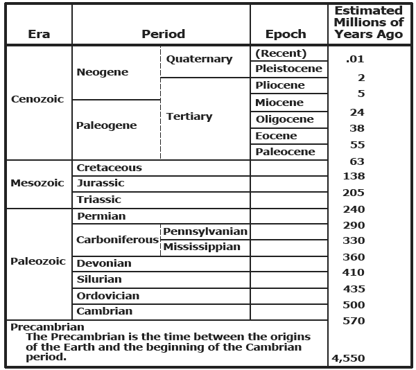

Outros Links:
|
- Introdução
- Dedicação e Agradecimentos
- Datação Radiométrica
- Algumas Críticas Criacionistas à Datação Radiométrica
- Idade Científica da Terra
- Algumas Idades Criacionistas da Terra
- Resumo
- Referências
- Adendo: Derivação da Equação de Correção da Reação de Nêutrons
Também veja: Conteúdo detalhado
INTRODUÇÃO
Os defensores do criacionismo "científico" (por exemplo, 54, 77, 90, 92, 95, 96, 135) afirmam ter desenvolvido um modelo científico legítimo para a criação e a história do universo que explica as observações científicas existentes tão bem quanto, se não melhor que, as teorias e conceitos atuais de biologia, química, física, geologia e astronomia. No entanto, mesmo uma leitura superficial da literatura do criacionismo "científico" revela que o modelo de criação não é baseado na ciência, mas sim uma apologia religiosa derivada de uma interpretação literal de partes do livro de Gênesis. De fato, esta literatura é repleta de referências diretas e indiretas a um Deus ou Criador, e as citações da Bíblia não são incomuns (por exemplo, 22, 77, 90, 91, 96, 97, 99, 131).
Os princípios do criacionismo "científico" incluem as crenças de que a Terra, o Sistema Solar e o universo têm menos de 10.000 anos (13, 77, 92, 116, 117) e que quase todas as rochas sedimentares na Terra foram depositadas em cerca de um ano durante um dilúvio mundial (29, 77, 92, 131). Ambas essas proposições são refutadas por um vasto e consistente corpo de evidências científicas.
As idades das diversas formações rochosas, da Terra, da Lua e dos meteoritos foram medidas usando técnicas de datação radiométrica (também chamada de datação isotópica) — relógios atômicos dentro das próprias rochas que, se usados corretamente, revelam o tempo decorrido desde a formação das rochas. Existe uma evidência científica esmagadora de que as rochas mais antigas na Terra têm entre 3,6 e 3,8 bilhões de anos, que as rochas mais antigas na Lua têm entre 4,4 e 4,6 bilhões de anos, e que a Terra, a Lua e os meteoritos se formaram há cerca de 4,5 a 4,6 bilhões de anos. Além disso, essas mesmas técnicas de datação verificaram e quantificaram conclusivamente a escala de tempo geológico relativa (Figura 1), que foi deduzida independentemente por estratigrafistas e paleontólogos com base em quase dois séculos de cuidadosas observações científicas da sequência de unidades rochosas sedimentares e fósseis.
Apesar das evidências massivas em contrário, os "cientistas" criacionistas continuam a defender sua crença em uma Terra muito jovem. Seus argumentos enquadram-se geralmente em duas categorias: a primeira envolve críticas às técnicas e dados de datação radiométrica; a segunda envolve vários cálculos que eles afirmam fornecer evidências quantitativas de que a Terra é jovem. Neste artigo, explico brevemente como os métodos de datação radiométrica funcionam e as principais evidências de que a Terra tem entre 4,5 e 4,6 bilhões de anos. Também examino em detalhes alguns exemplos das críticas e cálculos dos criacionistas e mostro que são cientificamente sem sentido.
|
 |
Dedicatória e Agradecimentos
Dedico este artigo à memória de Max Crittenden, que morreu de câncer no Dia de Ação de Graças, 1982. Max não foi apenas um amigo e colaborador, mas também um líder no esforço para preservar a integridade dos livros didáticos de ciências da Califórnia contra o ataque dos criacionistas no início dos anos 1970. Max foi uma fonte constante de encorajamento e apoio em muitas questões, mas especialmente em meus esforços para expor os erros gritantes na propaganda dos criacionistas sobre as evidências científicas para a idade da Terra e a vastidão do tempo geológico.
Agradeço aos meus amigos e colegas Patrick Abbott, Calvin Alexander, Frank Awbrey, Arthur Boucot, Stephen Brush, Max Crittenden, Norman Horowit, Thomas Jukes, Arthur Lachenbruch, Marvin Lanphere, Robert Root-Bernstein, John Sutter e Christopher Weber, que leram uma versão inicial do manuscrito e ofereceram comentários, sugestões e encorajamento valiosos.